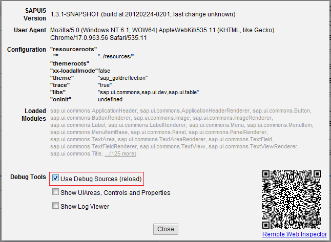

Debug Mode
By default SAPUI5 ships minimized and obfuscated resources for the applications. In case of debugging SAPUI5 you need to enable the debug mode.
Concept
The debug mode concept is a pure client side concept which finally makes assumptions about how the files can be addressed. Basically the SAPUI5 resources are minified and obfuscated. Next to those files the debug files are located having the suffix -dbg.
resources/sap-ui-core.js resources/sap-ui-core-dbg.js resources/sap/ui/commons/Button.js resources/sap/ui/commons/Button-dbg.js
The bootstrap script of SAPUI5 checks if the debug mode is active. When it is active it interrupts the execution of the script and embeds the debug version. This happens by adding another script tag and loading the -dbg.js file instead of the original one.
Activation
The debug mode can be activated in several ways - programmatic wise or UI wise.
Programmatic Activation
The following list shows the different programmatic variants:
- URL parameter:
sap-ui-debug=true
- Local Storage entry:
sap-ui-debug=X
To check or set the status of the debug mode, you might use the following API:
// check the status var bDebugMode = jQuery.sap.debug(); // set the debug mode jQuery.sap.debug(true);
Please keep in mind that changing the debug mode except of the URL parameter requires to reload the application so that the debug mode operation could be taken into account. Also it is not possible to activate the debug mode via bootstrap tag parameter.
Activation via Technical Info Dialog
The technical information of SAPUI5 could be opened by using the shortcut: CTRL + SHIFT + ALT + P. In the upcoming dialog you have the possibility to enable the debug mode of SAPUI5 by activating the checkbox "Use debug sources". Afterwards please make sure to reload. If you need to clear your cache please do this before activating the checkbox (otherwise the debug flag will be lost).
